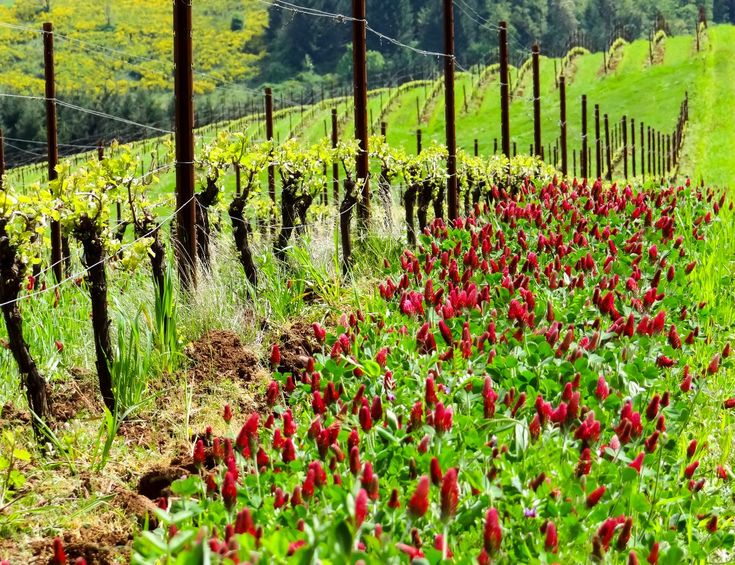
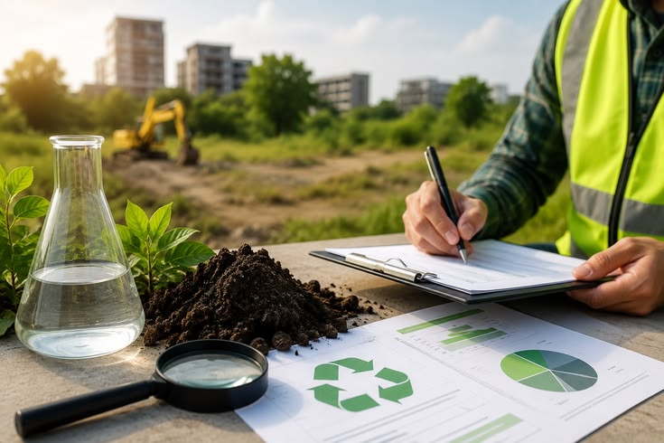
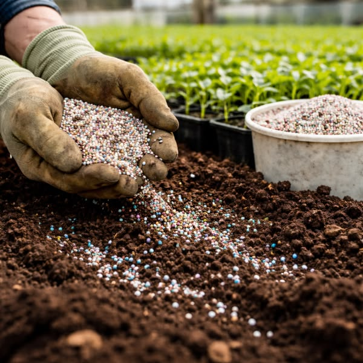
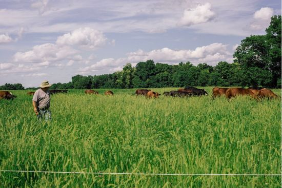
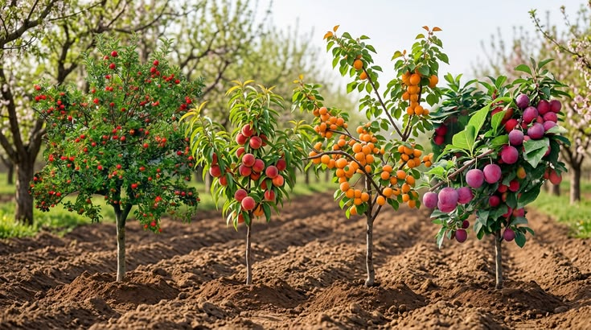
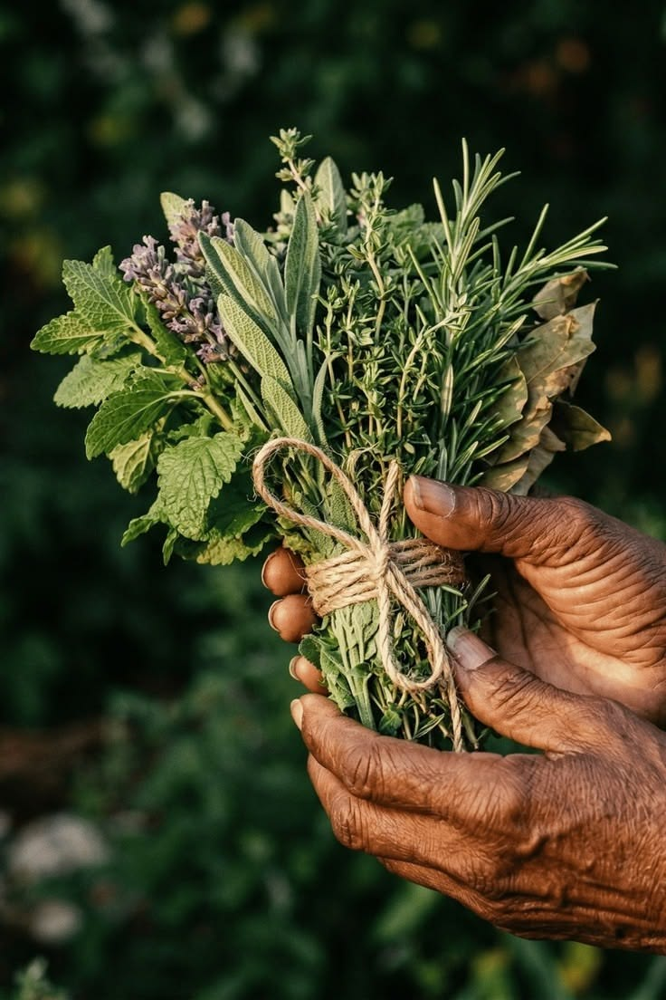
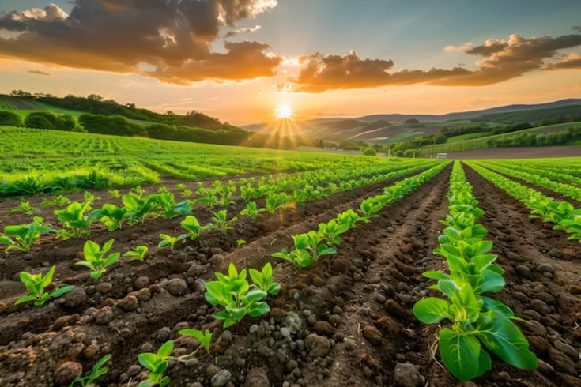

Vineyard • 450 AcresTerroir BRIX Enhancement
Halting fungicides allowed mycorrhizal fungi to supply vines with natural potassium.

Empirical multi-year agronomic trial results demonstrating yield resilience while slashing chemical inputs.

Midwest producer eliminated 65% of synthetic urea through seed inoculation and cover crop grazing.
High-density cell rotation quadrupled pasture water retention during a 50-year regional drought.
Zero surface runoff during flash torrential downpours.
Standing forage stockpile sustained cow herd through winter.
Spontaneous emergence of dormant warm-season perennial grasses.
Direct deep-core spectrometry verified subsoil humic storage.

Documented results across perennial vineyards, citrus groves, and commercial pastures.

Vineyard • 450 AcresHalting fungicides allowed mycorrhizal fungi to supply vines with natural potassium.

Orchards • 680 AcresAerobic compost tea out-competed root-knot nematodes without synthetic nematicides.

Dairy • 1,100 AcresReplacing ryegrass monocultures with 14-species leys reduced mastitis and raised milk solids.

Access comprehensive soil spectroscopy reports, Haney chronologies, and financial return audits.